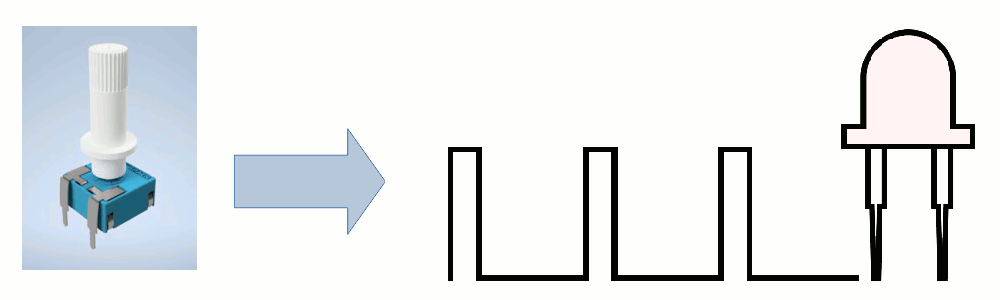
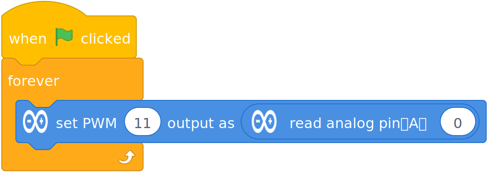
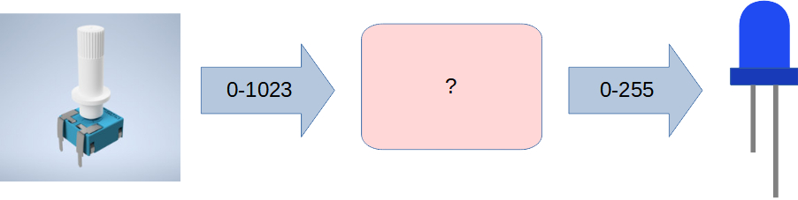
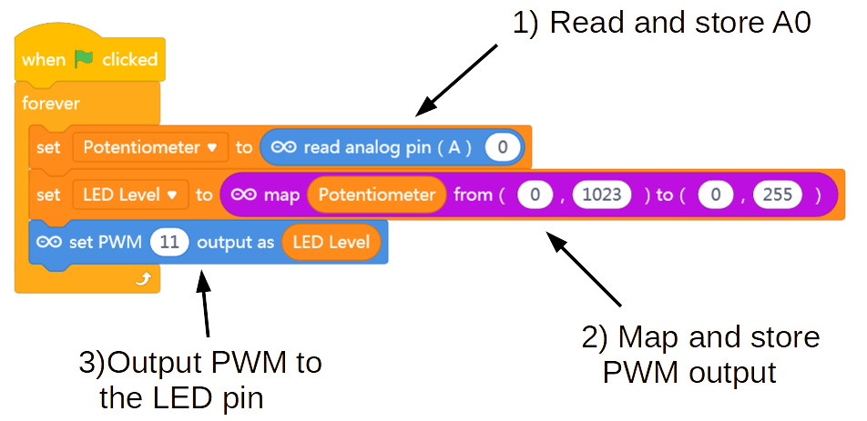

Mapping Input to Output
So, let's try to combine the new Read Analog code with the LED dimmer effect code to get our Potentiometer to control this effect:


Can't we just do this???

If not, why?
Well, what was the maximum value that Set PWM Output block expected? (255)
And what what was the maximum value that Read Analog block returned?
You see the issue?
We need to come up with a mapping that let's us read the analog value from our potentiometer, and map it to a number between 0 and 255, and then output that mapped number to the LED.

Luckily there is a Map block that can do this for us!

Map takes the range from one type of data (say, analog input) and converts it to a range of another kind of data (say, analog output)...
Note that we created a second variable called LED Level to store the mapped data value.
What else can we do with this???